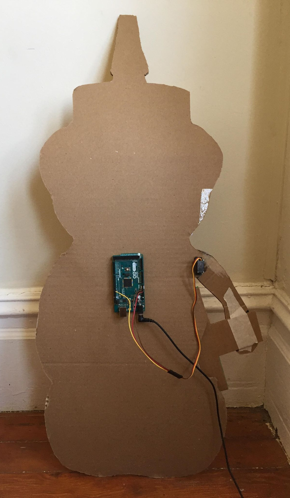
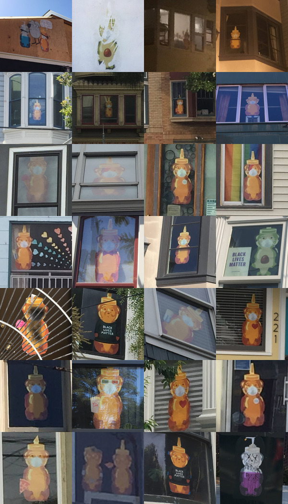

Honey Bear Automata
Project with N to give a fnnch Honey Bear a robotic arm. San Francisco 2020

The arm moves using an Ardiuno microcontroller and servo motor.
Here is Honey Bear in the window!

There are many versions displayed in windows around the city. These are the ones I collected as I explored the city during the summer:
